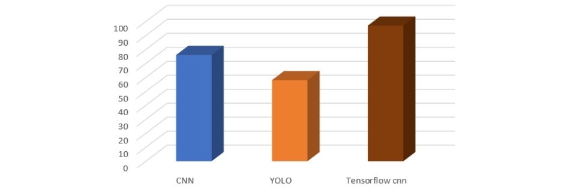

Intro
To detect the hand movement near to the window to detect the risk of human hand entangled and reverse the window automatically by activating the relay to reverse the motor,
incase if pinch is detected
This model is built using tensorflow with CNN for hand detection and giving decision in the immedite time making the system efficent. The bulit model can be implemented as an Android application or with Raspberry pi as hardware device.
Team
This project is built by the team Vel Tech Decoders, consistimg of team members Saurav Kumar Gupta, Shourjya Hazra and Rohit Kumar from Vel Tech Rangarajan Dr Sagunthala R&D Institute of Science and Technology, Chennai. The project is built under the supervision of Mrs. T. Kujani and Mrs. C. Shyamala Kumari.
Model Efficiency

After comparison to other models available for the purpose of hand detection, the used model with tensorflow api with cnn gives highest accuracy.
Contact